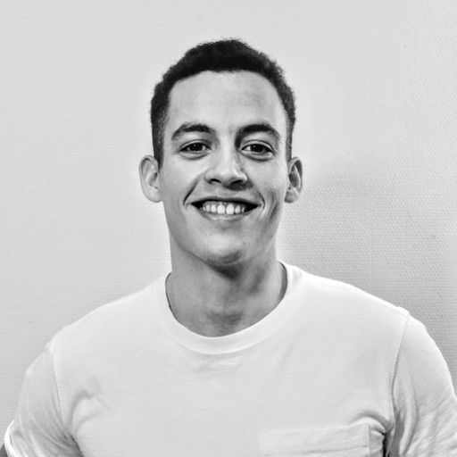

Postdoctoral Fellow, GliaLab Institute of Basic Medical Sciences, University of Oslo
I am a postdoctoral fellow in the lab of Rune Enger (GliaLab) at the University of Oslo, where I study the neural circuitry and dynamics that govern sleep. I completed an MD-PhD at the Kavli Institute for Systems Neuroscience, NTNU, in the lab of Edvard Moser and May-Britt Moser. Here I studied how the brain builds and uses its internal maps of space, with a focus on the fast, theta-timescale population dynamics that sweep through the entorhinal–hippocampal map many times per second.
* Equal contribution.